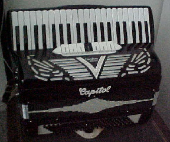

My Accordions
Currently I own two accordions! Here's my collection so far:
Capitol Piano Accordion

- Manufacturer: Capitol
- Model: "Custom-Built"
- Type: Piano
- Number of Keys: 41
- Bass Buttons: 120
- Right-Hand Registers: LMH
- Left-Hand Registers: 3
- Notes: Has Master Register Palm Bar
This Capitol accordion was my very first accordion! It basically has all the features I wanted out of a first accordion: it has 120 bass buttons and LMH registers. I got it for a really good price on Craigslist (this is like the only real way to buy accordions btw lol). I have travelled with this accordion before and it was kind of miserable.
The Bébé Medusa
- Manufacturer: Bébé Medusa
- Model: 小型パープル
- Type: Chromatic Button Accordion (C System)
- Number of Buttons: 62
- Bass Buttons: 72
- Right-Hand Registers: 1 (MM)
- Left-Hand Registers: 1
This is my second (and currently newest) accordion! The Bébé Medusa accordion is a chromatic button accordion made for beginners by J-Pop/Accordion group チャラン・ポ・ランタン (Charan Po Rantan). I've been wanting to learn how to play a CBA, but I was afraid of buying a massive and expensive one only to find out I didn't like it. When I found out Charan Po Rantan were selling their own accordions, I knew I had to get one, but currently they seem to only be shipping them out in Japan, and as of this writing they haven't been taking any new orders for the last few months as they're still fulfilling old orders. However... I managed to find this accordion on a Japanese auction site. I ended up buying it and despite the fact that I had to pay international shipping, it was still actually one of my cheapest options for getting a CBA!
This accordion has a wonderful musette sound to it which I love a lot. It's a good contrast to my other accordion, and makes me feel confident in maybe one day buying a bigger chromatic button accordion!